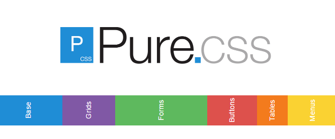

Este sitio tiene como prosposito fomentar aprendizaje de lenguaje HTML en fundamentos de CSS y Frameworks CSS
los conceptos basico y sencillo para buen manejo.
Fundamentos de CSS
¿Qué es CSS? Si quieres saber un poco más sobre fundamentos de la web, cómo están hechas las páginas web, conoceremos
un poco más sobre CSS, el lenguaje que nos permite dar estilos a nuestra página web.Las hojas de estilo
constan de una serie de instrucciones que definen cómo se han de representar determinados elementos de página con etiquetas HTML

Frameworks CSS
Los frameworks se utilizan en el ámbito de la programación de aplicaciones desde hace décadas.
Recientemente han comenzado a utilizarse para programar y diseñar aplicaciones web, por lo que ya
existen decenas de frameworks para CSS
framework es un conjunto de herramientas, librerías, convenciones y buenas prácticas que pretenden
encapsular las tareas repetitivas en módulos genéricos fácilmente reutilizables, tambien es un conjunto de herramientas,
hojas de estilos y buenas prácticas que permiten al diseñador web olvidarse de las tareas repetitivas para centrarse
en los elementos únicos de cada diseño en los que puede aportar valor.
